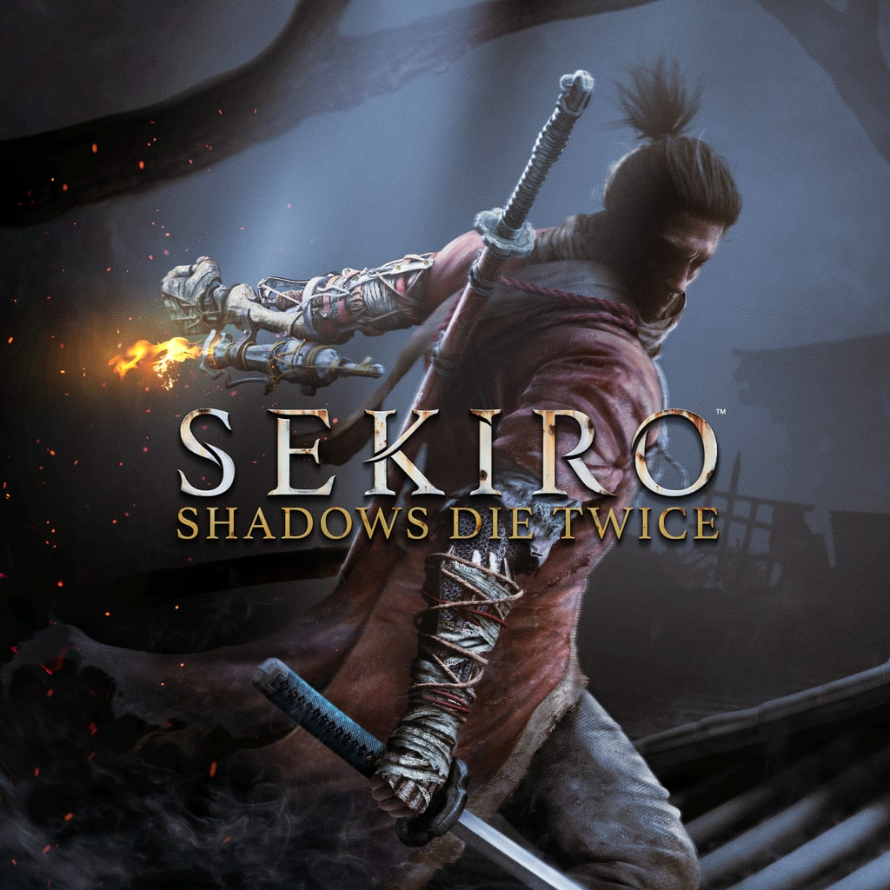

Demon's Souls (2009)
El juego que inició el género Soulslike. Con su innovador sistema de muerte y mecánicas de invasión online, Demon's Souls ofreció un desafío implacable en un mundo oscuro y opresivo. Destacó por su sistema de tendencias de mundo y su narrativa ambiental sutil.
Dark Souls (2011)

Dark Souls refinó la fórmula de Demon's Souls, introduciendo un mundo interconectado y un combate aún más desafiante. Con una ambientación rica en lore, jefes icónicos y mecánicas complejas, estableció el estándar del género Soulslike.
DLC: Artorias of the Abyss (2012) - Añadió nuevas áreas, jefes desafiantes y expandió la historia de Artorias, uno de los caballeros legendarios de Lordran.
Dark Souls II (2014)
Aunque fue desarrollado por un equipo diferente, Dark Souls II mantuvo la esencia de su predecesor, agregando nuevas mecánicas como la regeneración limitada de estus y enemigos que dejaban de reaparecer tras ser eliminados múltiples veces.
DLC: The Lost Crowns Trilogy (2014) - Incluyó tres expansiones: Crown of the Sunken King, Crown of the Old Iron King y Crown of the Ivory King, cada una con nuevos enemigos y áreas.
Bloodborne (2015)

Bloodborne llevó el género en una dirección más agresiva, eliminando escudos y promoviendo una jugabilidad más rápida y ofensiva. Inspirado en el horror cósmico de Lovecraft, ofreció una historia llena de misterios y criaturas grotescas.
DLC: The Old Hunters (2015) - Introdujo nuevas armas, jefes y expandió la historia de los cazadores antiguos.
Dark Souls III (2016)

El cierre de la saga Dark Souls. Combinó elementos de todos los juegos anteriores para ofrecer combates fluidos, un diseño de niveles espectacular y una historia que concluyó la epopeya de la llama y la oscuridad.
DLC: Ashes of Ariandel (2016) y The Ringed City (2017) - Expansiones que añadieron nuevas zonas, enemigos y el cierre definitivo de la historia.
Sekiro: Shadows Die Twice (2019)
Una desviación del género Soulslike tradicional, Sekiro introdujo un sistema de combate basado en la postura y el parry, junto con una narrativa más lineal. Ambientado en el Japón feudal, ofreció una historia de venganza y honor.
Actualización: Sekiro: Free Update (2020) - Introdujo nuevos desafíos, rematches contra jefes y aspectos cosméticos.
Demon's Souls Remake (2020)

Una reconstrucción completa del clásico de 2009, con gráficos mejorados y jugabilidad optimizada para la nueva generación. Se mantuvo fiel al original, pero con mejoras visuales y técnicas.
Elden Ring (2022)

La culminación de la filosofía de diseño de FromSoftware. Elden Ring llevó el género a un mundo abierto masivo con exploración libre, combates desafiantes y una historia creada en colaboración con George R. R. Martin.
DLC: Shadow of the Erdtree (2024) - Expansión que amplía el lore de la Tierra Intermedia y presenta nuevos desafíos.